Introduction
insperplot extends ggplot2 with Insper’s visual identity, providing custom themes, color palettes, and specialized plotting functions for academic and institutional use.
Font Setup (Optional but Recommended)
insperplot uses fonts based on Insper’s official template: Georgia (primary for titles), Inter and Arial (for body text). EB Garamond and Playfair Display are used as fallbacks for titles. While optional, installing these fonts significantly enhances plot aesthetics.
Note: while “GT Ultra Fine Bold” is one of the official fonts, it is not available for free and thus is not included in the package.
# Check if recommended fonts are installed
check_insper_fonts()Installation instructions:
- Visit Google Fonts
- Download “Inter”, “EB Garamond”, and “Playfair Display”
- Install on your system
- Restart R/RStudio
Note: Georgia is typically pre-installed on most systems. GT Ultra Fine is a proprietary font and not available for free. If fonts are unavailable, plots will use system defaults.
Basic Usage: theme_insper()
The foundation of insperplot is theme_insper(), which
applies Insper’s visual identity to any plot.
ggplot(mtcars, aes(mpg, wt)) +
geom_point() +
labs(
title = "Basic Theme",
subtitle = "Using theme_insper()",
caption = "Fonte: mtcars") +
theme_insper()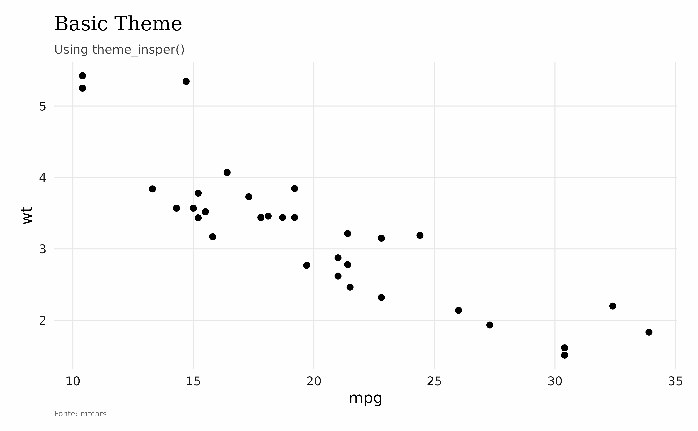
This function supports some quick customization options demonstrated below.
ggplot(mtcars, aes(mpg, wt)) +
geom_point() +
labs(
title = "Basic Theme",
subtitle = "Using theme_insper()",
caption = "Fonte: mtcars"
) +
theme_insper(font_title = "Inter", border = "closed")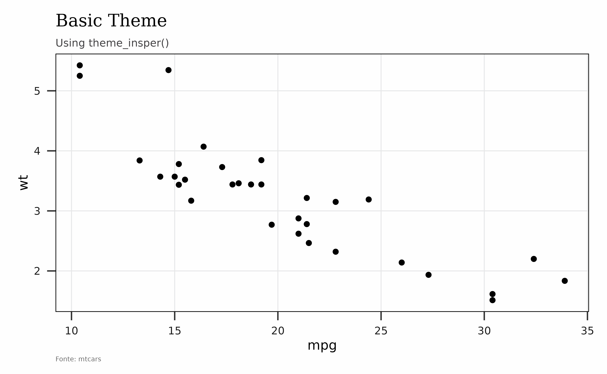
The main arguments of theme_insper() are:
-
font_title: Font for titles. Default is “Georgia”. -
font_text: Font for body text. Default is “Inter 18pt”. -
grid: Grid lines. Default isTRUE. -
border: Border style. Default is “open” (no border). -
align: Overall title, subtitle, and caption alignment. Default is “panel” (same asggplot2default).
To change any particular aspect of theme_insper add a
theme() call.
ggplot(mtcars, aes(mpg, wt)) +
geom_point() +
theme_insper() +
theme(axis.text = element_text(color = "red"))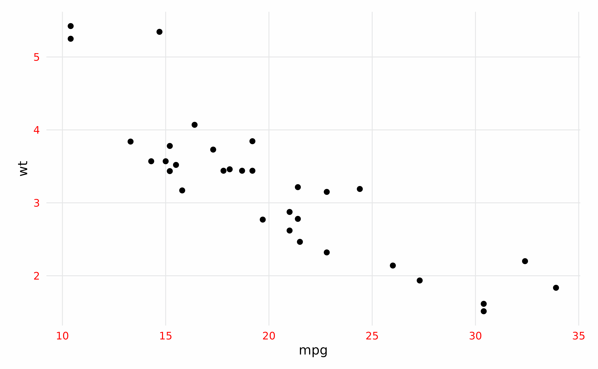
Working with Colors
The colors used in insperplot are based on Insper’s brandkit.
Color Basics
Extracting Individual Colors
Use get_insper_colors() to extract individual colors by
name:
# Get specific colors
get_insper_colors("reds1", "teals1")
#> reds1 teals1
#> "#E4002B" "#009491"
# Get all individual colors
all_colors <- get_insper_colors()
head(all_colors)
#> white off_white black gray_light gray_med gray_meddark
#> "#ffffff" "#fefefe" "#000000" "#E6E7E8" "#BCBEC0" "#414042"Visualizing Individual Colors
Use show_insper_colors() to see what colors are
available:
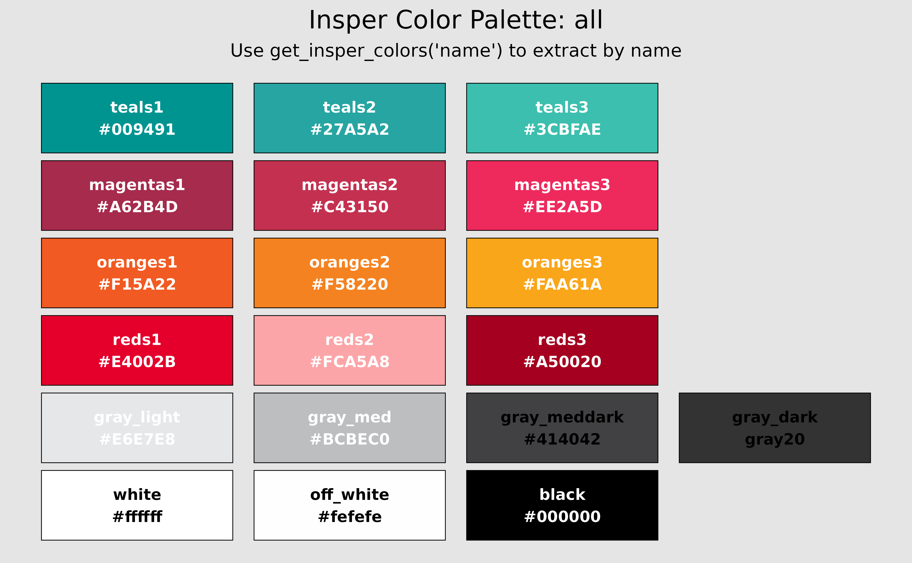
show_insper_colors("reds")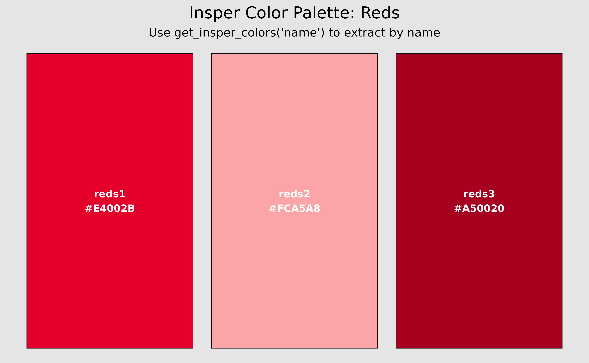
Working with Palettes
# Show specific palette
show_insper_palette("reds")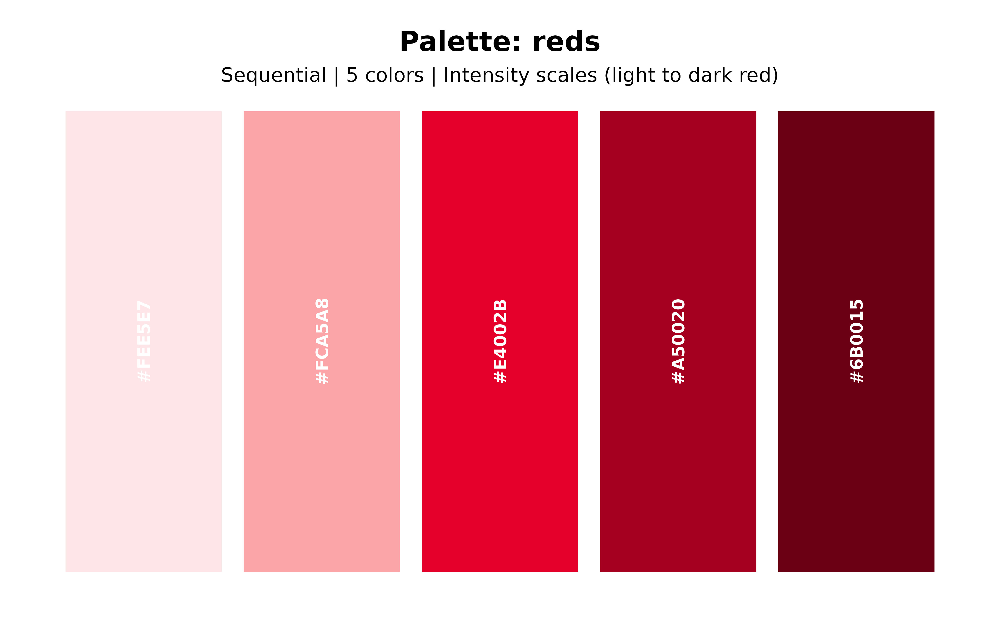
# Show default "main" palette
show_insper_palette()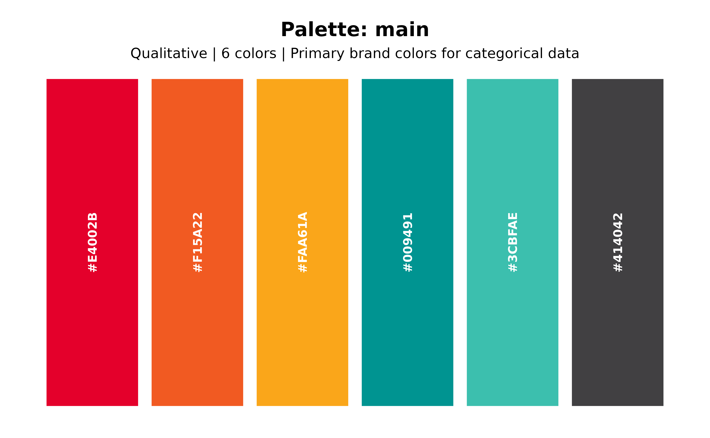
# List all available palettes
list_palettes()
#> name type n_colors
#> 1 main qualitative 6
#> 2 reds sequential 5
#> 3 oranges sequential 5
#> 4 teals sequential 5
#> 5 grays sequential 5
#> 6 red_teal diverging 5
#> 7 red_teal_ext diverging 11
#> 8 diverging diverging 5
#> 9 bright qualitative 6
#> 10 contrast qualitative 6
#> 11 categorical qualitative 8
#> 12 accent_red accent 6
#> 13 accent_teal accent 6
#> 14 categorical_ito qualitative 8
#> 15 categorical_tab qualitative 10
#> 16 categorical_set qualitative 9
#> recommended_use
#> 1 Primary brand colors for categorical data
#> 2 Intensity scales (light to dark red)
#> 3 Intensity scales (light to dark orange)
#> 4 Intensity scales (light to dark teal)
#> 5 Intensity scales (light to dark gray)
#> 6 Diverging data (negative/positive, red/teal)
#> 7 Extended diverging palette (11 colors)
#> 8 Classic diverging palette (teal/gray/red)
#> 9 Bright categorical colors (high contrast)
#> 10 High contrast categorical colors
#> 11 8-color categorical palette
#> 12 Accent palette with red emphasis
#> 13 Accent palette with teal emphasis
#> 14 Okabe-Ito colorblind-safe palette
#> 15 Tableau 10 categorical palette
#> 16 ColorBrewer Set1 paletteUsing Colors in ggplot2
The package provides scale functions for seamlessly integrating Insper colors into ggplot2 plots.
Discrete Scales
For categorical variables, use scale_color_insper_d() or
scale_fill_insper_d():
# Discrete color scale
ggplot(iris, aes(x = Sepal.Length, y = Sepal.Width, color = Species)) +
geom_point(size = 3) +
scale_color_insper_d(palette = "main") +
theme_insper() +
labs(title = "Discrete Color Scale")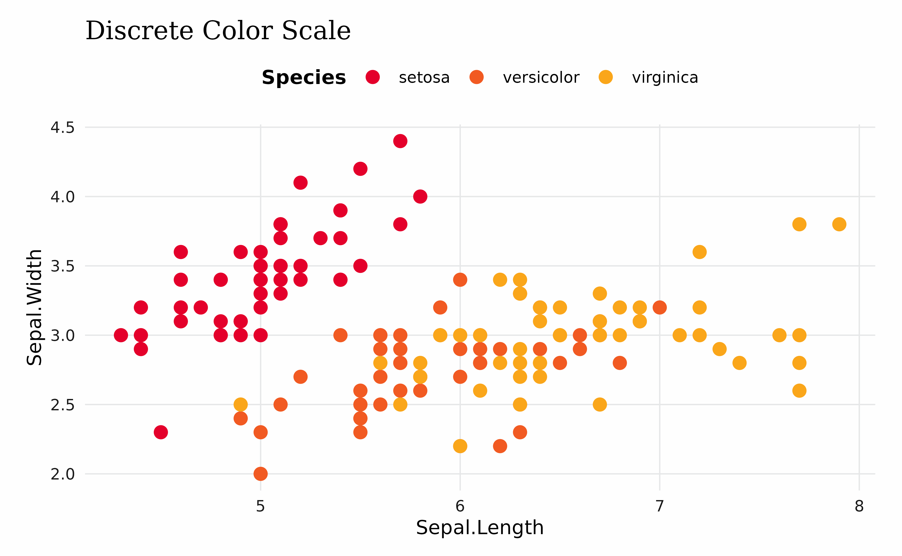
# Discrete fill scale with barplot
ggplot(mtcars, aes(x = factor(cyl), fill = factor(gear))) +
geom_bar(position = "dodge") +
scale_fill_insper_d(palette = "bright") +
theme_insper() +
labs(title = "Discrete Fill Scale", x = "Cylinders", fill = "Gears")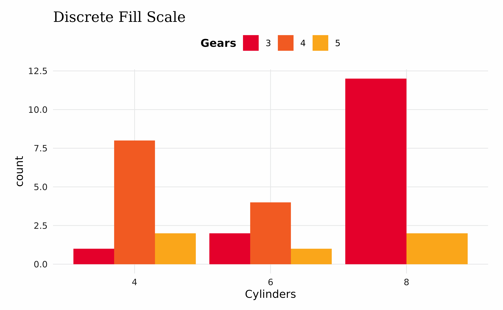
Continuous Scales
For numerical variables, use scale_color_insper_c() or
scale_fill_insper_c():
# Continuous color scale
ggplot(mtcars, aes(x = wt, y = mpg, color = hp)) +
geom_point(size = 3) +
scale_color_insper_c(palette = "reds") +
theme_insper() +
labs(title = "Continuous Color Scale", color = "Horsepower")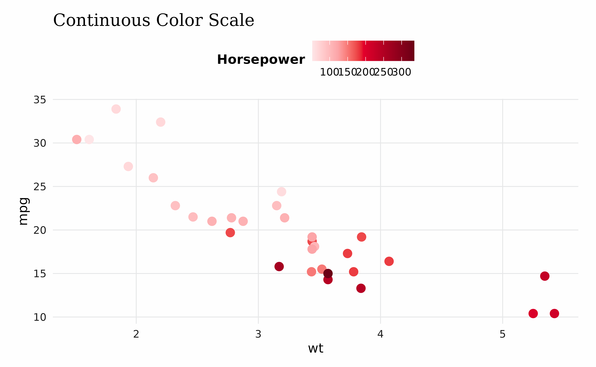
Using Colors in Base R
While insperplot was designed for ggplot2, Insper colors can also be used in base R plots:
# Simple scatter plot with Insper colors
plot(mtcars$mpg, mtcars$wt,
col = get_insper_colors("reds1"),
pch = 19, cex = 1.5,
main = "Base R Plot with Insper Colors",
xlab = "MPG", ylab = "Weight")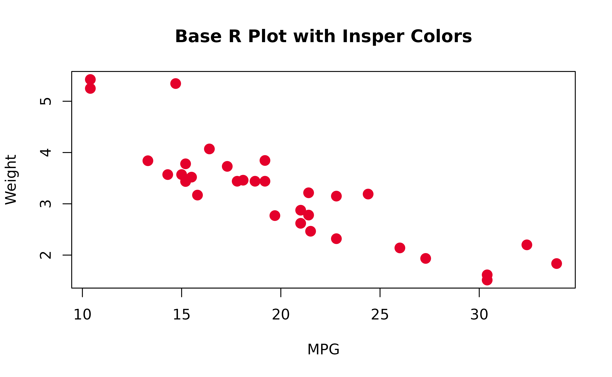
# Barplot with multiple Insper colors
barplot(table(mtcars$cyl),
col = get_insper_colors("reds1", "oranges1", "teals1"),
main = "Cylinders Distribution",
xlab = "Number of Cylinders",
ylab = "Count")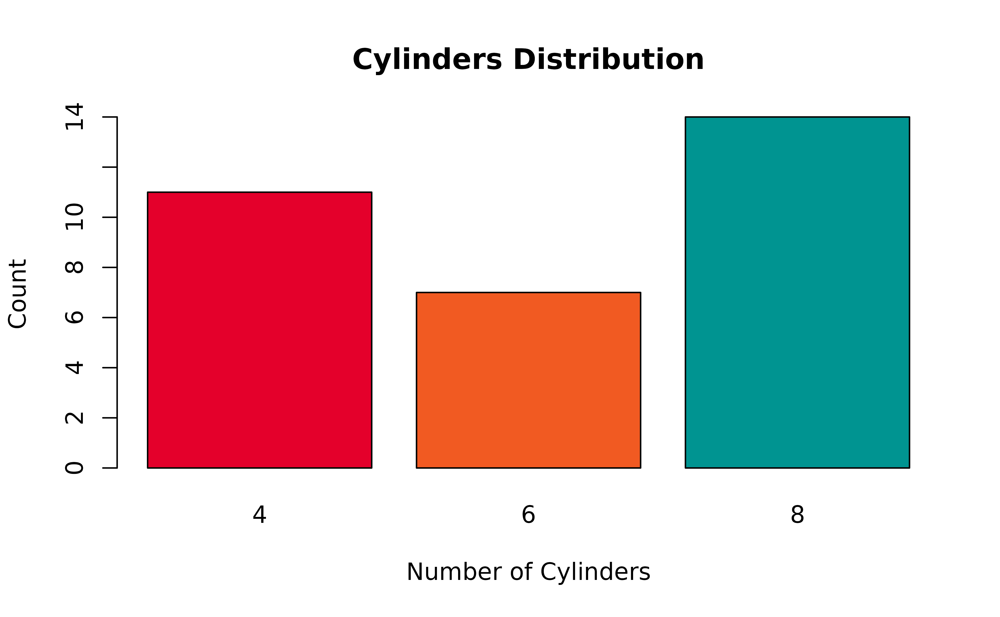
Saving Plots
For best results when saving plots, use ggsave() with
the ragg device to ensure proper font rendering:
# Save plot with optimal settings
p <- ggplot(mtcars, aes(wt, mpg)) +
geom_point() +
theme_insper()
ggsave("my_plot.png", p, width = 8, height = 5, dpi = 300, device = ragg::agg_png)